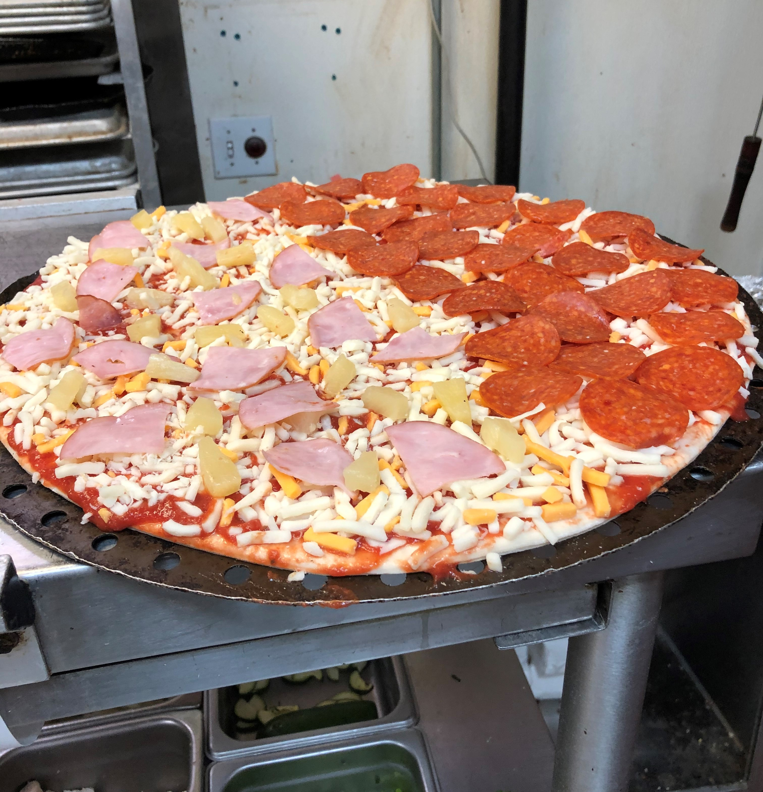

Hello. This is Clement Koo here. I'm from Oakland, California. I studied at Bishop O'Dowd High School,
and graduated from the University of California Santa Cruz with a degree in Economics. However, I have
an inteest in game design and animation. Currently, I am studying HTML/CSS web design through a UC Berkeley Bootcamp program.
Projects
placeholder
Other Experiences

Aside from that, I've also had prior job experiences working at a local pizza restaraunt during my college days. Additionally,
I worked in Customer Support in an Amazon Locker Room Office for half a year before I took a year learn news skills to better myself.
Nonetheless, in addition to having a well-rounded set of skills, I have quite the experience in dealing with all sorts of customers.
Goals
While I do have a bit of experience in Java, I plan on one day broaden my horizons by picking up a few more programming langauges here
and there. Such as the mommonly used C++ and Python. Since I have an interest in game design, that is one of the many required seconary
skills to pick up. Not to mention having to improve my own drawing as well. I vision myself one day helming my own big project with the
variety of skills I have at my own disposal.